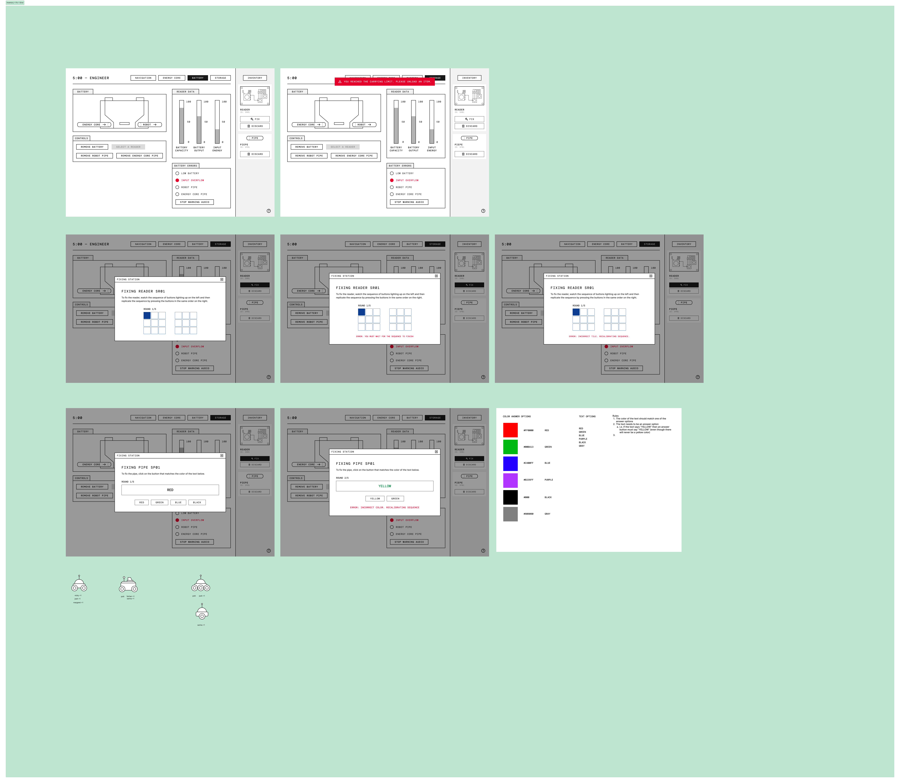
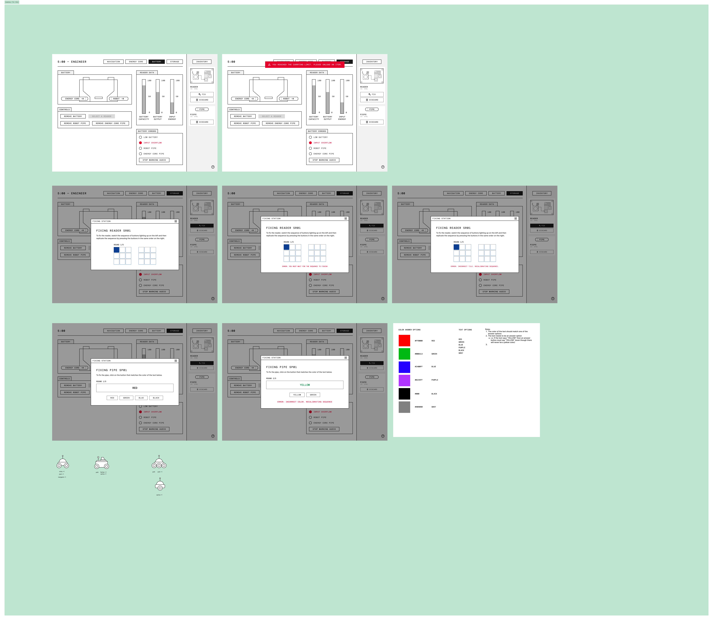

Overview
Problem
To successfully reach Mars, astronauts will need greater autonomy when handling anomalies, as communication delays hinder Mission Control's ability to provide immediate support. NASA requires anomaly simulations to understand human performance in these high-risk scenarios.
During future missions to Mars, astronauts will have to endure an up-to 40 minute round-trip communication delay with mission control.
When unexpected problems arise, astronauts must operate with autonomy to solve these anomalies in the absence of Mission Control.
Currently, NASA is researching new ways to aid astronauts in solving anomalies in space, but there is no standard method to assess readiness for their furtherest mission: going to Mars.
The Goal
Our goal is to empower researchers to better identify gaps in anomaly resolution through evaluating teams' performances in response to anomaly scenarios.


 
